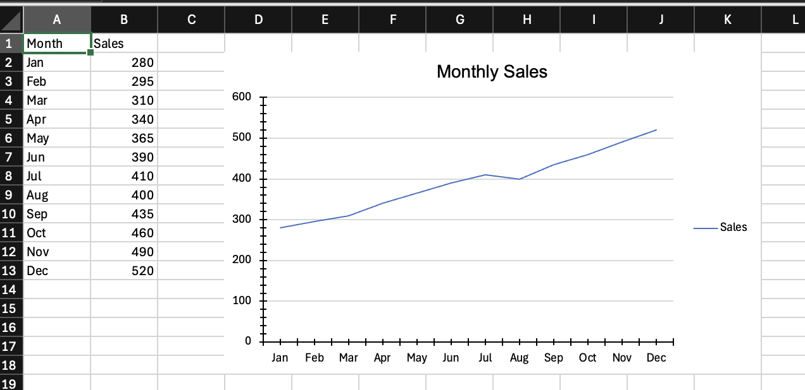
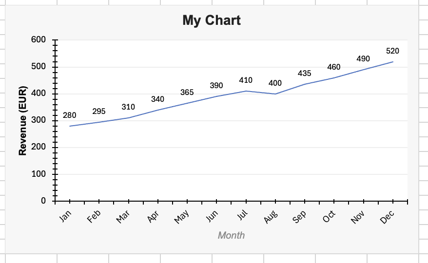
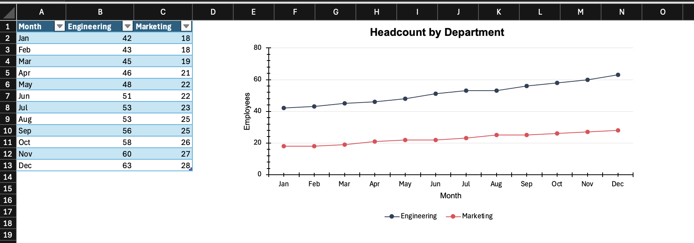
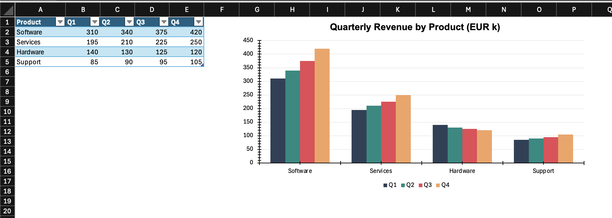
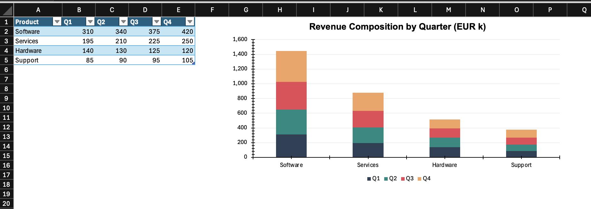
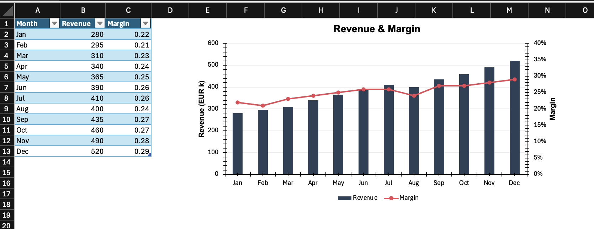
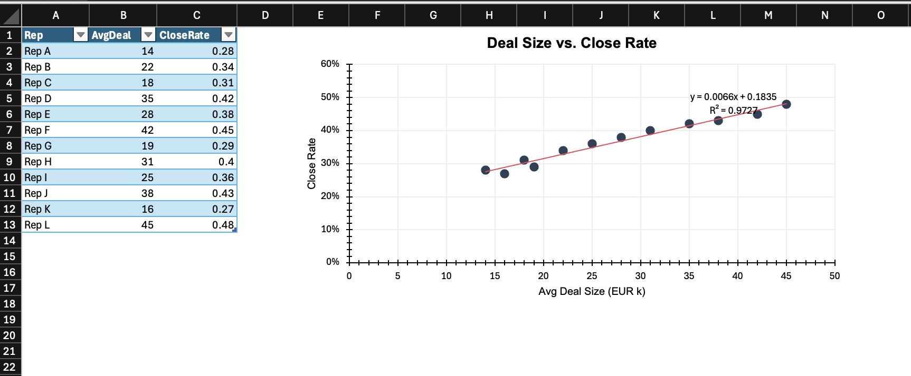
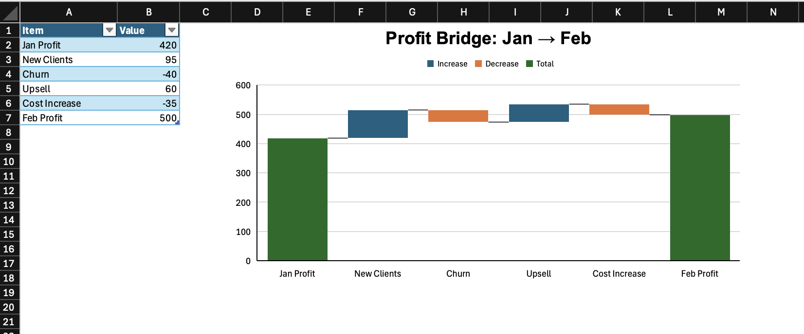
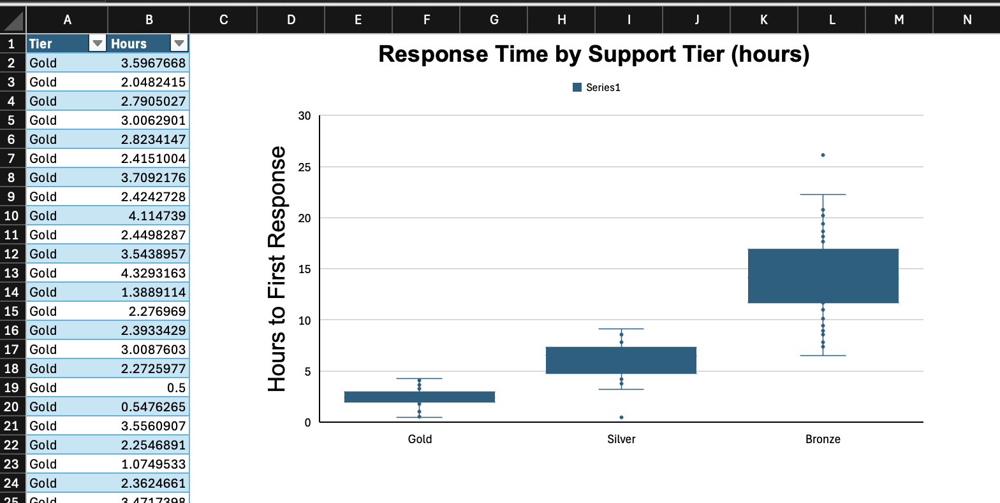

Experimental package that is still in development.
encharter is the charting companion to openxlsx2. It is treated as a first-class citizen there: wb_add_encharter() lives directly in openxlsx2, and encharter integrates with openxlsx2’s own helper functions — wb_color() for colors and fmt_txt() for rich-text formatting — wherever those make sense in a chart context.
The package covers both the standard OOXML chart types (bar, line, scatter, pie, …) and the extended modern types Excel introduced later: waterfall, treemap, sunburst, box-and-whisker, funnel, and region map.
Installation
You can install the last stable release from CRAN:
Or you can install development versions via r-universe:
install.packages(
"encharter",
repos = c("https://janmarvin.r-universe.dev", "https://cloud.r-project.org")
)Or from GitHub directly:
remotes::install_github("JanMarvin/encharter")encharter requires openxlsx2 (>= 1.26).
How a chart is built
ec() (short for encharter()) creates an R6 chart object. You then call methods on it to add series and configure the chart, and finally hand it to wb_add_encharter().
library(openxlsx2)
library(encharter)
df <- data.frame(
Month = month.abb,
Sales = c(280, 295, 310, 340, 365, 390, 410, 400, 435, 460, 490, 520)
)
chart <- ec("lineChart")
chart$set_chart_title("Monthly Sales")
chart$add_series(
name = "Sales!$B$1",
label = "Sales!$A$2:$A$13",
data = "Sales!$B$2:$B$13"
)
wb <- wb_workbook() |>
wb_add_worksheet("Sales") |>
wb_add_data(x = df) |>
wb_add_encharter(graph = chart, dims = "D2:K18")Because R6 objects mutate in place, there is no need to reassign after each method call.

Fig 1: Our first encharter chart
Specifying data ranges
Series data is referenced by cell range strings. There are two ways to write these.
By hand, using standard spreadsheet notation — sheet name, column, and row, all absolute:
chart$add_series(
name = "Sales!$B$1",
label = "Sales!$A$2:$A$13",
data = "Sales!$B$2:$B$13"
)Via wb_data(), which constructs the range strings from a workbook object that already has data in it. This avoids hardcoding cell addresses and is less error-prone when the data layout changes:
dat <- wb_data(wb, sheet = "Sales", dims = "A1:B13")
chart$add_series(
name = "Sales",
label = "Month",
data = dat
)Both approaches produce the same OOXML output. The manual approach is more explicit and easier to read when the ranges are simple and fixed. wb_data() pays off when building charts programmatically or when the source range is determined at runtime, and feels more native to R.
There are trade-offs to both. With the range approach it is possible to assign a custom series name that is not itself a cell reference — in the wb_data() approach the name must correspond to a column in the data object. Multi-level legends, where spreadsheet groups entries across two rows (for example, an age group label spanning a male and female series), are only achievable with the range approach. On the other hand, some features like drop-down lines require construction with wb_data() objects. The examples below use both approaches interchangeably to show that they are equivalent; a comment marks each switch.
wb_color() and fmt_txt()
Anywhere encharter accepts a color string, you can pass a plain six-digit hex value ("4472C4") or a wb_color() object from openxlsx2:
# chart$add_series(..., color = wb_color("steelblue"))
chart$set_chart_title("Sales", font_color = wb_color(hex = "#CC0000"))Chart titles also accept fmt_txt() objects for mixed formatting within a single title — for example, a word in bold followed by normal text:
Styling
encharter ships with an opinionated set of defaults that produce clean, neutral charts without any extra configuration. The chart background is white, the plot area is transparent, vertical grid lines are off by default, and the legend sits to the right. These defaults are a deliberate subset of what OOXML allows — enough to cover most cases without overwhelming the API.
All styling calls are optional and can be mixed into any of the examples below.
Titles
chart$set_chart_title("My Chart", bold = TRUE, font_size = 14, font_color = "222222")
chart$set_x_title("Month", italic = TRUE, font_color = "888888")
chart$set_y_title("Revenue (EUR)", bold = TRUE)Axes
# Value axis: fixed range, thousands separator, light grid lines
chart$set_y_axis(
min = 0,
max = 600,
major = 100,
format = "#,##0",
grid_lines = TRUE,
grid_color = "EEEEEE"
)
# Category axis: angled labels, outward ticks
chart$set_x_axis(
major_tick = "out",
rotation = -45
)Chart and plot area
chart$set_chart_style(fill = "F7F7F7", line = "DDDDDD", line_width = 0.5)
chart$set_plot_style(fill = "FFFFFF")Data labels
# Global default for all series
# the position is relative to the chart type, while some chart types support
# "t", "b" (e.g., line) others require "outEnd" (bar charts)
chart$set_data_label_style(show_val = TRUE, font_size = 9)
# # Or per series, via add_series()
# chart$add_series(..., show_val = TRUE)Legend
# chart$set_legend_style(pos = "bottom", font_size = 9) # bottom
chart$set_legend_style(pos = "none") # hidden
wb <- wb |>
wb_add_encharter(graph = chart, dims = "D20:K36")
if (interactive()) wb$open()
Fig 2: The initial chart with styling
Examples
The chunks below build a single workbook. Run them from top to bottom and save at the end to get encharter_examples.xlsx with one sheet per chart type. Each sheet places the data in the top-left corner and the chart directly to its right, with some basic table styling applied so the result looks reasonable when opened.
# This section can be run standalone. The libraries are loaded again here
# so these chunks work independently of the intro section above.
library(openxlsx2)
library(encharter)
wb <- wb_workbook(creator = "encharter")Line chart — trends over time
A line chart is the natural choice when the X axis is a time dimension and the story is about direction of change rather than individual values. Here we show monthly headcount across two departments so the reader can compare trajectories at a glance.
df_line <- data.frame(
Month = month.abb,
Engineering = c(42, 43, 45, 46, 48, 51, 53, 53, 56, 58, 60, 63),
Marketing = c(18, 18, 19, 21, 22, 22, 23, 25, 25, 26, 27, 28)
)
wb <- wb_add_worksheet(wb, "Line", grid_lines = FALSE)
wb <- wb_add_data_table(
wb, sheet = "Line", x = df_line,
dims = "A1", table_style = "TableStyleMedium2"
)
wb <- wb_set_col_widths(wb, sheet = "Line", cols = 1:3, widths = c(10, 14, 12))
wb_df <- wb_data(wb)
chart <- ec("lineChart")
chart$set_chart_title("Headcount by Department", bold = TRUE)
chart$set_x_title("Month")
chart$set_y_title("Employees")
chart$set_y_axis(min = 0, max = 80, major = 20, grid_lines = TRUE, grid_color = "EEEEEE")
chart$add_series(
name = Engineering,
label = Month,
data = wb_df,
color = "2E4057",
marker = "circle"
)
chart$add_series(
name = Marketing,
label = Month,
data = wb_df,
color = "E84855",
marker = "circle"
)
chart$set_legend_style(pos = "bottom")
wb <- wb_add_encharter(wb, sheet = "Line", graph = chart, dims = "E1:N18")
Fig 3: The line chart
Bar chart — comparing categories
A bar/column chart works well when the categories are independent (not a time series) and the goal is to rank or compare magnitudes. Here we show quarterly revenue by product line — a fixed set of categories where size differences are the main point.
df_bar <- data.frame(
Product = c("Software", "Services", "Hardware", "Support"),
Q1 = c(310, 195, 140, 85),
Q2 = c(340, 210, 130, 90),
Q3 = c(375, 225, 125, 95),
Q4 = c(420, 250, 120, 105)
)
wb <- wb_add_worksheet(wb, "Bar", grid_lines = FALSE)
wb <- wb_add_data_table(
wb, sheet = "Bar", x = df_bar,
dims = "A1", table_style = "TableStyleMedium2"
)
wb <- wb_set_col_widths(wb, sheet = "Bar", cols = 1:5, widths = c(12, 8, 8, 8, 8))
wb_df <- wb_data(wb)
chart <- ec("barChart")
chart$set_chart_title("Quarterly Revenue by Product (EUR k)", bold = TRUE)
chart$set_y_axis(min = 0, format = "#,##0", grid_lines = TRUE, grid_color = "EEEEEE")
colors <- c("2E4057", "048A81", "E84855", "F4A261")
quarters <- c("Q1", "Q2", "Q3", "Q4")
cols <- c("B", "C", "D", "E")
variables <- names(wb_df)
for (i in seq_along(quarters)) {
chart$add_series(
name = variables[i + 1L],
label = variables[1L],
data = wb_df,
color = colors[i]
)
}
chart$set_legend_style(pos = "bottom")
wb <- wb_add_encharter(wb, sheet = "Bar", graph = chart, dims = "G1:P18")
Fig 4: The bar chart
Stacked bar chart — part-to-whole over categories
A stacked bar shows how a total is composed, and how that composition shifts across categories. Here the same revenue data is stacked to show each product line’s share of total revenue per quarter.
wb <- wb_add_worksheet(wb, "Stacked", grid_lines = FALSE)
wb <- wb_add_data_table(
wb, sheet = "Stacked", x = df_bar,
dims = "A1", table_style = "TableStyleMedium2"
)
wb <- wb_set_col_widths(wb, sheet = "Stacked", cols = 1:5, widths = c(12, 8, 8, 8, 8))
wb_df <- wb_data(wb)
chart <- ec("barChart")
chart$set_chart_title("Revenue Composition by Quarter (EUR k)", bold = TRUE)
chart$set_y_axis(format = "#,##0", grid_lines = TRUE, grid_color = "EEEEEE")
# using the range approach here (interchangeable with wb_data())
for (i in seq_along(quarters)) {
chart$add_series(
name = sprintf("Stacked!$%s$1", cols[i]),
label = "Stacked!$A$2:$A$5",
data = sprintf("Stacked!$%s$2:$%s$5", cols[i], cols[i]),
color = colors[i],
grouping = "stacked",
overlap = 100
)
}
chart$set_legend_style(pos = "bottom")
wb <- wb_add_encharter(wb, sheet = "Stacked", graph = chart, dims = "G1:P18")
Fig 5: The stacked bar chart
Combo chart — two measures, two scales
When two series have different units or very different magnitudes, putting them on the same axis makes one of them unreadable. A combo chart solves this by adding a second Y axis. Here, absolute revenue (bars, left axis) is shown alongside a margin percentage (line, right axis).
df_combo <- data.frame(
Month = month.abb,
Revenue = c(280, 295, 310, 340, 365, 390, 410, 400, 435, 460, 490, 520),
Margin = c(.22, .21, .23, .24, .25, .26, .26, .24, .27, .27, .28, .29)
)
wb <- wb_add_worksheet(wb, "Combo", grid_lines = FALSE)
wb <- wb_add_data_table(
wb, sheet = "Combo", x = df_combo,
dims = "A1", table_style = "TableStyleMedium2"
)
wb <- wb_set_col_widths(wb, sheet = "Combo", cols = 1:3, widths = c(10, 10, 10))
wb_df <- wb_data(wb)
chart <- ec("barChart")
chart$set_chart_title("Revenue & Margin", bold = TRUE)
# primary axis — bars for revenue
chart$add_series(
name = Revenue,
label = Month,
data = wb_df,
color = "2E4057",
type = "barChart"
)
# secondary axis — line for margin
chart$add_series(
name = Margin,
label = Month,
data = wb_df,
type = "lineChart",
secondary = TRUE,
color = "E84855",
marker = "circle",
line_width = 2
)
chart$set_y_axis(min = 0, format = "#,##0", grid_lines = TRUE, grid_color = "EEEEEE")
chart$set_y2_axis(min = 0, max = 0.4, format = "0%")
chart$set_y_title("Revenue (EUR k)", bold = TRUE)
chart$set_y2_title("Margin", bold = TRUE)
chart$set_legend_style(pos = "bottom")
wb <- wb_add_encharter(wb, sheet = "Combo", graph = chart, dims = "E1:N18")
Fig 6: The combo chart
Scatter chart — relationship between two measures
A scatter chart is for exploring the relationship between two numeric variables. Both axes are continuous, unlike the category-based charts above. Here we look at whether there is a pattern between average deal size and close rate across sales reps.
set.seed(7)
df_scatter <- data.frame(
Rep = paste("Rep", LETTERS[1:12]),
AvgDeal = c(14, 22, 18, 35, 28, 42, 19, 31, 25, 38, 16, 45),
CloseRate = c(.28, .34, .31, .42, .38, .45, .29, .40, .36, .43, .27, .48)
)
wb <- wb_add_worksheet(wb, "Scatter", grid_lines = FALSE)
wb <- wb_add_data_table(
wb, sheet = "Scatter", x = df_scatter,
dims = "A1", table_style = "TableStyleMedium2"
)
wb <- wb_set_col_widths(wb, sheet = "Scatter", cols = 1:3, widths = c(10, 10, 12))
chart <- ec("scatterChart")
chart$set_chart_title("Deal Size vs. Close Rate", bold = TRUE)
chart$set_x_title("Avg Deal Size (EUR k)")
chart$set_y_title("Close Rate")
chart$set_y_axis(min = 0, max = 0.6, format = "0%", grid_lines = TRUE, grid_color = "EEEEEE")
chart$set_x_axis(min = 0, grid_lines = TRUE, grid_color = "EEEEEE")
chart$add_series(
name = "",
label = "Scatter!$B$2:$B$13",
data = "Scatter!$C$2:$C$13",
color = "2E4057",
marker = "circle",
marker_size = 8,
show_line = FALSE,
trendline = list(type = "linear", color = "E84855", show_r2 = TRUE)
)
chart$set_legend_style(pos = "none")
wb <- wb_add_encharter(wb, sheet = "Scatter", graph = chart, dims = "E1:N18")
coef(lm(CloseRate ~ AvgDeal, data = df_scatter))
#> (Intercept) AvgDeal
#> 0.183476102 0.006631492
Fig 7: The scatter chart
Waterfall chart — decomposing a change
A waterfall chart breaks a total into its contributing parts, making it easy to see what drove an increase or decrease. This is common in finance for showing how you get from one period’s profit to the next, or from gross revenue down to net income. Bars marked as subtotals render as running totals rather than incremental steps.
df_wf <- data.frame(
Item = c("Jan Profit", "New Clients", "Churn", "Upsell", "Cost Increase", "Feb Profit"),
Value = c(420, 95, -40, 60, -35, 500)
)
wb <- wb_add_worksheet(wb, "Waterfall", grid_lines = FALSE)
wb <- wb_add_data_table(
wb, sheet = "Waterfall", x = df_wf,
dims = "A1", table_style = "TableStyleMedium2"
)
wb <- wb_set_col_widths(wb, sheet = "Waterfall", cols = 1:2, widths = c(16, 10))
chart <- ec("waterfall")
chart$set_chart_title("Profit Bridge: Jan → Feb", bold = TRUE)
chart$add_series(
name = "",
label = "Waterfall!$A$2:$A$7",
data = "Waterfall!$B$2:$B$7",
subtotals = c(0, 5) # 0-based indices; Jan Profit (0) and Feb Profit (5) are totals, not steps
)
wb <- wb_add_encharter(wb, sheet = "Waterfall", graph = chart, dims = "D1:M18")
Fig 8: The waterfall chart
Box-and-whisker — distribution of a metric
A box-and-whisker plot summarises the distribution of values — median, quartiles, and outliers — for one or more groups. It is useful when you want to compare spread and central tendency rather than just averages. Here we compare response times across three support tiers.
set.seed(42)
df_box <- data.frame(
Tier = rep(c("Gold", "Silver", "Bronze"), times = c(40, 40, 40)),
Hours = c(
pmax(0.5, rnorm(40, mean = 2.5, sd = 0.8)),
pmax(0.5, rnorm(40, mean = 6.0, sd = 2.0)),
pmax(0.5, rnorm(40, mean = 14.0, sd = 4.5))
)
)
wb <- wb_add_worksheet(wb, "BoxWhisker", grid_lines = FALSE)
wb <- wb_add_data_table(
wb, sheet = "BoxWhisker", x = df_box,
dims = "A1", table_style = "TableStyleMedium2"
)
wb <- wb_set_col_widths(wb, sheet = "BoxWhisker", cols = 1:2, widths = c(10, 10))
chart <- ec("boxWhisker")
chart$set_chart_title("Response Time by Support Tier (hours)", bold = TRUE)
chart$set_y_title("Hours to First Response")
chart$add_series(
label = "BoxWhisker!$A$2:$A$121",
data = "BoxWhisker!$B$2:$B$121",
statistics = "inclusive"
)
wb <- wb_add_encharter(wb, sheet = "BoxWhisker", graph = chart, dims = "D1:M22")
Fig 9: The box and whisker chart
Missing data behavior
By default, gaps in data appear as breaks in a line. You can change this per chart:
chart <- ec("line")
chart$set_disp_blanks("span") # connect across missing values
chart$set_disp_blanks("zero") # treat as zero
chart$set_disp_blanks("gap") # defaultNotes
-
encharteris relatively young and does not yet validate all input against the OOXML standard. For example, a label position like"outEnd"works correctly on bar charts but may produce unexpected results on line charts, as no check for chart-type compatibility is in place. Test your output before using it in important files. - Series cell references use standard spreadsheet notation:
"Sheet1!$A$2:$A$10". The sheet name is required. - For extended chart types (waterfall, treemap, etc.), OOXML uses a different XML schema internally (
chartEx).encharterhandles this transparently —ec("waterfall")returns aChartExobject rather than aChartobject, but the interface is the same. - Radar charts accept
filled = TRUEinadd_series()to fill the polygon interior. - Bubble charts require a third data range for bubble sizes, passed as
weightinadd_series(). - Bar direction (vertical column vs horizontal bar) is set via
dir = "col"(default) ordir = "bar"inadd_series().
Related
-
openxlsx2— the workbook packageencharterplugs into - openxlsx2 book — longer-form documentation and recipes for openxlsx2